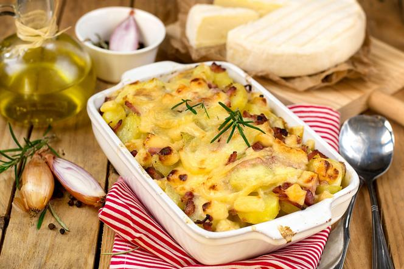

Tartiflette

Description
Tartiflette's life may have begun as a 1980s marketing campaign for Reblochon cheese, but it wouldn't be correct to say that this casserole doesn't have deeper roots. It is really a variation on a Savoyard dish called pela des Aravis. Pela des aravis is made from potatoes, onion, and Reblochon cheese. Tartiflette adds bacon and white wine to that. And both of those are just variants of the wider Alpine tradition of melting cheese on potatoes that includes dishes like Swiss raclette and Italian tortino di patate alla Valdostana.
Hey, you'd make a habit of melting buckets of cheese on potatoes too if you were freezing your tootsies off every day in the frosty Alps. (Fun personal fact: My patrilineal ancestors hail from the Austrian Alps, where there is an actual mountain lake with my name on it, which means I'm biologically predisposed to eating this type of food. I'll be sure to tell my doctor that the next time I see her.)
Ingredients
- 2 1/4 pounds (1kg) Yukon Gold potatoes
- Kosher salt
- 3 fresh thyme sprigs
- 1/4 pound (115g) slab or thick-cut bacon, cut into 1/4-inch lardons
- 1 to 2 tablespoons (15 to 30g) unsalted butter, only if needed
- 2 medium (8-ounce; 225g) yellow onions, thinly sliced
- Freshly ground black pepper
- 1/2 cup (120ml) dry white wine
- 1/2 cup (120ml) heavy cream or crème fraîche
- 1 pound (450g) Reblochon-style soft-rind cheese (see headnote for suggested cheeses)
Steps
- Peel potatoes and cut into 1/2-inch thick rounds. In a large pot, cover potatoes with cold water. Season generously with salt, add thyme, and bring to a gentle simmer over medium heat. Cook at a bare simmer until potatoes are just tender and can be easily pierced with a paring knife, about 25 minutes. Discard thyme, drain potatoes, return to pot, and set aside.
- Adjust oven rack to middle position and preheat oven to 350°F (175°C). In a 10-inch cast iron or stainless-steel skillet, heat bacon over medium-high heat until fat begins to render. Lower heat to medium and continue to cook, stirring occasionally, until fat is mostly rendered and bacon is cooked but not crisp, about 5 minutes. If there is excessive rendered fat, drain off all but 1/4 cup (60ml); conversely, if the bacon is lean and didn't release much fat, add 1 to 2 tablespoons (15 to 30g) butter. Add onions, season with salt and pepper, and cook, stirring frequently, until onions have softened but not browned, about 8 minutes.
- Add white wine and cook, stirring, until wine has almost fully cooked off, 1 to 2 minutes. Scrape bacon-onion mixture into pot with potatoes and toss gently to thoroughly combine.
- Scrape potato mixture back into cast-iron skillet or into a 3-quart (3L) baking dish. Add cream or crème fraîche (the latter is thicker, so you can dollop it around in that case).
- Cut cheese into roughly 1/2-inch-thick slabs. You can do this by cutting the cheese wheels in half to make half-moons; halve wheels through the equator; or slice crosswise into thick planks. Arrange cheese on top of potatoes, rind side up. Set skillet or baking dish on top of a rimmed baking sheet and bake until the cheese is melted and bubbling and lightly browned on top, about 40 minutes.
- Serve, scooping tartiflette from the skillet or baking dish onto individual serving plates.